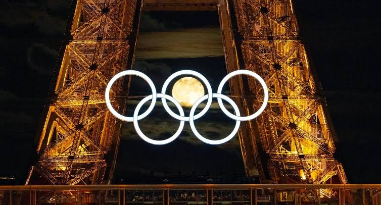

I giovani svedesi che hanno hackerato il Beach Volley
Fino a pochi anni fa, il beach volley si basava su una regola d'oro in tre tocchi: ricezione, alzata da terra e attacco. Poi sono arrivati David Åhman e Jonatan Hellvig, guidati dai loro allenatori Rasmus Jonsson e Anders Kristiansson, e hanno letteralmente stravolto il manuale di questo sport.
La Rivoluzione: Lo "Swedish Jump Set"
La vera arma letale della coppia svedese è il modo in cui gestiscono il secondo tocco. Invece di rimanere a terra per alzare la palla al compagno, il giocatore svedese salta in aria vicino alla rete.
Questo crea un dilemma irrisolvibile per la difesa avversaria:
- Se il muro avversario salta per murare chi ha la palla, lo svedese fa un'alzata rapidissima (spesso in bagher o a una mano) per il compagno, che si ritrova ad attaccare con la rete completamente libera.
- Se il muro avversario non salta (aspettando l'alzata per l'altro giocatore), lo svedese che è già in aria schiaccia direttamente la palla nel campo avversario al secondo tocco.


Un dominio assoluto
Grazie a questo stile di gioco ultra-rapido, imprevedibile e fisicamente dispendioso, Åhman e Hellvig hanno dominato il circuito mondiale. Hanno vinto campionati Europei, Mondiali e hanno coronato il loro percorso con la Medaglia d'Oro alle Olimpiadi di Parigi 2024, confermandosi stabilmente al primo posto del ranking mondiale.